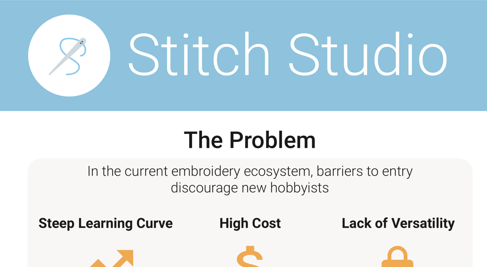

Highlights of the Week
It’s the final countdown! The Mechatronics Engineering Capstone Design Symposium is scheduled for this Friday (March 15), where we present Stitch Studio to judges and to the public. With that in mind, here are the updates from the past week.
We performed our first successful end-to-end test! We embroidered a bullseye design first and then the more complex party popper emoji.
first end-to-end test! 🎯 pic.twitter.com/5XQF6bNgi9
— Stitch Studio (@stitchstudio1) March 6, 2019
🎉🎉🎉 pic.twitter.com/OZItklaUbY
— Stitch Studio (@stitchstudio1) March 7, 2019
We also continued preparations for the symposium, creating new embroidery designs and drafting a playbook for the demo. I continued working on our poster; here’s a sneak peek!
What’s Next?
Here’s what we plan to do this week:
- Finish symposium poster
- Polish symposium demo
- Embroider team t-shirts
- Create more embroidery designs
This week is the last stretch for our project, so follow us on Twitter for the latest updates! Also, feel free to send us your embroidery design requests!
Ben